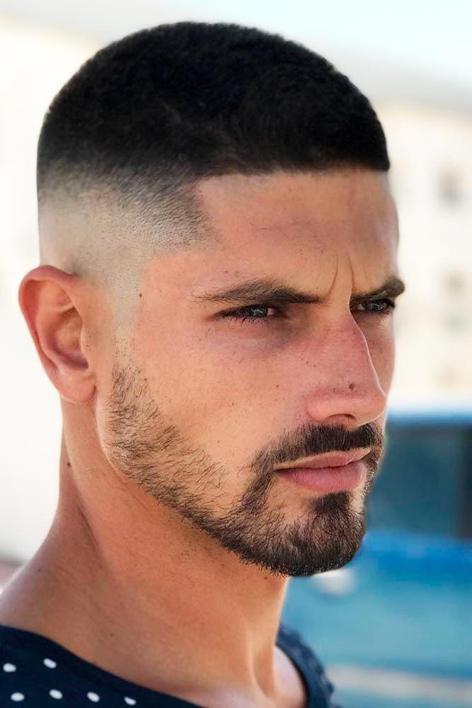
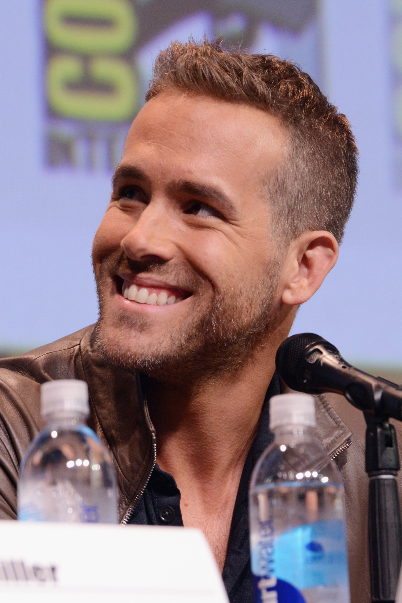

Две самые простые короткие стрижки — это бокс и полубокс.
Для бокса характерны ультракороткие (до 0,3 см) волосы в затылочной
и височных зонах и более длинные (0,5-4 см) на макушке,
при этом височная и затылочная части могут быть выбритыми.
Полубокс отличается более удлиненными прядями в верхней части (до 8 см),
также плавная окантовка, проходящей по затылочной зоне или ниже и выбритыми висками.
Также в этом году сочетайте полубокс с более длиной челкой.
Кроме классических вариантов мужских стрижек
на короткие волосы бокс и полубокс,
стоит обратить внимание на более неординарные стрижки.
Фаворитом мужских стрижек 2019 года,
уже второй год остается французская стрижка Mens French Crop Fade.
Эта стрижка по прежнему актуальна в этом году, причина?
Это универсальность стрижки Mens French Crop Fade.
Это простая в укладке стрижка, которая не требует особого ухода
и подходит под разный стиль и образ жизни,
к тому же сочетается с любой структурой волос.
Также стрижка Mens French Crop Fade отлично смотрится с щетиной или бородой.